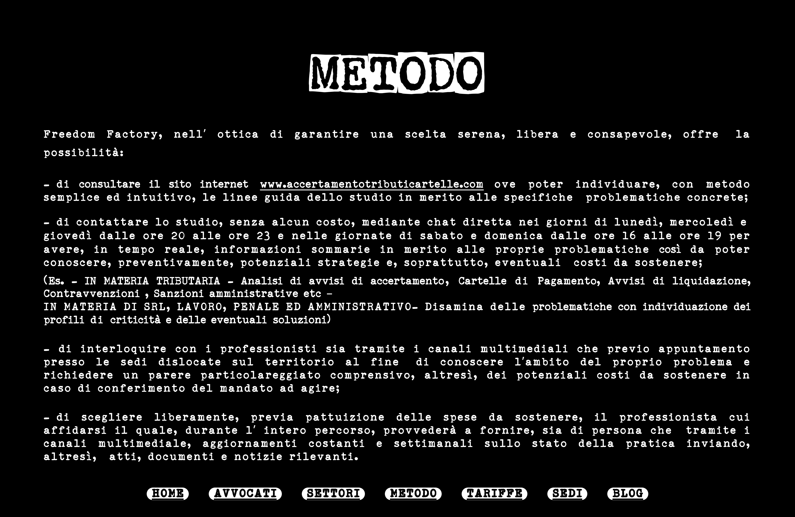

METODO
Freedom Factory, nell' ottica di garantire una scelta serena, libera e consapevole, offre la possibilita:
- di consultare il sito internet www.accertamentotributicartelle.com ove poter individuare, con metodo semplice ed intuitivo, le linee guida dello studio in merito alle specifiche problematiche concrete;
- di contattare lo studio, senza alcun costo, mediante chat diretta nei giorni di lunedi, mercoledi e giovedi dalle ore 20 alle ore 23 e nelle giornate di sabato e domenica dalle ore 16 alle ore 19 per avere, in tempo reale, informazioni sommarie in merito alle proprie problematiche cosi da poter conoscere, preventivamente, potenziali strategie e, soprattutto, eventuali costi da sostenere;
(Es. - IN MATERIA TRIBUTARIA - Analisi di avvisi di accertamento, Cartelle di Pagamento, Avvisi di liquidazione, Contravvenzioni, Sanzioni amministrative etc -
IN MATERIA DI SRL, LAVORO, PENALE ED AMMINISTRATIVO- Disamina delle problematiche con individuazione dei profili di criticita e delle eventuali soluzioni)
- di interloquire con i professionisti sia tramite i canali multimediali che previo appuntamento presso le sedi dislocate sul territorio al fine di conoscere l' ambito del proprio problema e richiedere un parere particolareggiato comprensivo, altresi, dei potenziali costi da sostenere in caso di conferimento del mandato ad agire;
- di scegliere liberamente, previa pattuizione delle spese da sostenere, il professionista cui affidarsi il quale, durante l' intero percorso, provvedera a fornire, sia di persona che tramite i canali multimediali, aggiornamenti costanti e settimanali sullo stato della pratica inviando, altresi, atti, documenti e notizie rilevanti.